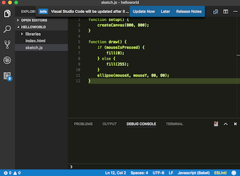

p5.js

p5.js is a JavaScript library that aims to make creative coding accessible to artists, designers, educators and students.
Pros
- Easy to use.
- Free.
- Web browser based so it runs on many platforms.
- Many examples.
- Uses JavaScript which is an industry standard programming language with a lot of learning materials and support.
Cons
- Simplified framework limits scope of projects.
- No standard development environment so some time must be spent investigating tools and setting up a development environment.
Recommended For
- A great next step for students that are pushing the boundaries of what is possible in Scratch or other visual programming tools.
- Year 8, 9 and 10 programming classes as a first introduction to a general purpose programming language.
- Developing interactive teaching resources for maths, science and ICT.
Details
p5.js is part of the Processing family that aims to make creative coding accessible to artists, designers, educators and students. p5.js has the additional goal of providing an environment that runs in modern web browsers with no additional requirements. The concept of creative coding is somewhat nebulous but generally covers artistic endeavours that may or may not be interactive and often process images, sounds and video.
p5.js is a great introduction to what the Australian Digital Technologies Curriculum describes as a general purpose programming language. p5.js uses the JavaScript language which is an industry standard programming language that is part of the glue (along with HTML and CSS) that enables interactive web sites. Whilst students will be introduced to JavaScript p5.js deliberately limits the scope to reduce the cognitive load. Students can produce engaging, interactive programs with only a few lines of code.
p5.js is free and open source. As it is browser based it will run on any device that can run modern JavaScript including iPads and netbooks. For development all that is required is a text editor, however, it would be recommended to introduce students to an integrated development environment that provides scaffolding such as syntax highlighting and code completion. A great option is Microsoft’s Visual Studio Code which is free and runs on Mac OS X and Windows.
On the downside, the type of project that can be developed with p5.js is limited. For example, although games can be developed it is not recommended. However, once students want to move to the next level they can easily transport their JavaScript to other frameworks such as Phaser which is an HTML5 game framework that uses JavaScript as its programming language.
Example
This is an example of what can be done using p5.js. The example is taken from the openprocessing website.